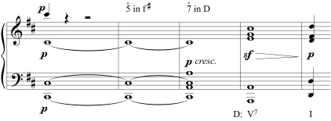

Section 22.7 Modulations Without Pivot Chords
This section contains the following subsections below:
Subsection 22.7.1 Direct Modulation
Direct modulation (also known as phrase modulation) is a type of modulation where a composer decides to move suddenly to a new key without using pivot chords or preparing the new tonic with its dominant.


In the example below from the second song of the same song cycle as the example above, Schubert does not attempt to change gradually from C minor to A♭ major, but instead stops on a half cadence in C minor and begins on the tonic in A♭ major in the next bar.

Direct modulation is the most common type of “modulation” found in popular music. At the beginning of this chapter we defined this type of modulation in popular music as “key change.”

With direct modulation, composers do not make any attempt to connect two different keys through any pivot chords or common tones. In the next section, we examine how composers connect two keys through a common tone.
Subsection 22.7.2 Common-Tone Modulation
In common-tone modulation, two chords are connected through a single note to bridge the distance between two keys.
In the following example, the note C♯ acts as a hinge between a C♯ major chord (\(\left.\text{V}\right.\) in F♯ minor) and an A dominant seventh chord (\(\left.\text{V}^{7}\right.\) in D major).



In the next example, the note A acts as a hinge between an A major chord (\(\left.\text{V}\right.\) in D minor) and an F major chord (\(\left.\text{I}\right.\) in F major).


Subsubsection 22.7.2.1 Chromatic Mediants
In a common-tone modulation, the two chords connecting the two keys are typically in a chromatic mediant relationship. Chromatic mediants are chords with roots a third apart that share only one common tone and have the same quality (both are major or both are minor).

Any major or minor triad will have four chromatic mediants, as shown in the example below.

Below are examples chromatic mediants that do not involve modulation. In fact, the progression in the following three examples are found in the last bar of Figure 22.7.7, the progression from \(\left.\text{i}\right.\) to ♭\(\left.\text{vi}\right.\) (shown as Cm to A♭m in the example above).


Subsection 22.7.3 Sequential Modulation
Modulation can also be accomplished by sequence. In a sequential modulation, a melody and its accompanying harmonies are repeated at a new pitch level to establish or lead to a new key. In the following example, the sequence of the original idea occurs in the new key.

In the following example, an idea in C major is repeated up a step in D major, then up another step in E minor before reaching an F♯\(\left.\text{}^{\circ}{}\right.\) chord, a chord with dominant function in G major.


In the next example, after a cadence in G minor, an idea in F minor is repeated down a whole step in E♭ minor to achieve the change of key to E♭ major, which is the starting key of this aria, as can be seen in the key signature.


While this is by no means an exhaustive list of modulatory techniques, it should give you a sense of some of the different means composers use to change keys.